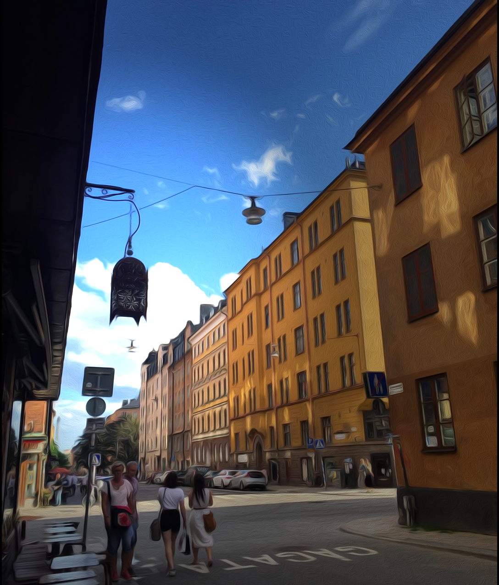
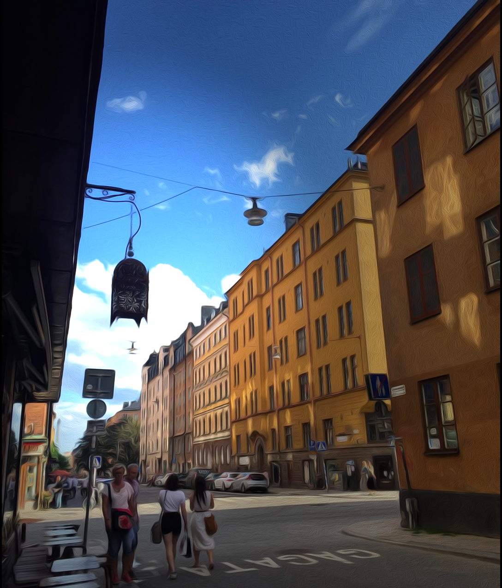

Yuguang Li (Riley)


402 Paul G. Allen Center for Computer Science & Engineering, 185 West Stevens Way Northeast Seattle, WA 98195
Email : ylee3@cs.washington.edu


402 Paul G. Allen Center for Computer Science & Engineering, 185 West Stevens Way Northeast Seattle, WA 98195
Email : ylee3@cs.washington.edu
I'm a 3rd-year PhD student advised by Professor Linda Shapiro from University of Washington. I'm a part of the GRAIL lab in UW CSE. I have strong interests and background in image object detection, machine learning, ray-tracing, computation photography, artificial intelligence and software development. I'm working on multiple projects of large-scene photon mapping, medical histopathological image recognition, face recognition and signal processing of raw sensor data (lytro and large-footprint lidar).
Relevant courses include Machine Learning, Computer Vision, Computer Graphics, Artificial Intelligence, Digital Signal Processing, Optics for Engineers, Robotics, Embededed System, Geospatial Information System, Fundamentals of Programming and Algorithms and Data Structures. Proficient in C++, C, Python, OpenCV, OpenGL, Caffe, Halide and Matlab. Worked on different platforms like Windows, Linux and Mac OS.
I was active in remote sensing community (previous IEEE GARSS, SPIE and ASPRS student members) doing sensor simulation, physics model simulation, pattern recognition and lidar signal processing. Resume
I built a Halide-based cross-platform fast image proscessing solution to simplify hardware acceleration coding in image processing. With out framework built on OpenGL Halide, GPU and CPU image processing programs could be easily accelerated from scheduling. Meanwhile, Halide compiles them on all kind of hardware platforms, iOS, Android, windows, webs apps and etc. During the project, I helped improve the Halide library with OpenGL. In the meantime, I invented several new filters, such as graphic novel, pop-art and halftone. Photoshop Express and Aviary have already been using our solution in their products. [slides]
Matting and compositing a reflective/refractive object like a glass cup into a new environment and make it look realistic from different perspectives is an interesting generalization of traditional greenscreen matting. Douglas introduced the environment matting method to simulate reflection/refraction effect for single perspective. To solve our multi-view environment matting problem, we implemented the traditional single-image environment method and incorporated interpolation to generate environment matting for unseen perspectives. Experiments using DSLR images and iPhone videos demonstrate promising results for both single-view environment matting and interpolation. We also did experiments with Lytro-Illum camera and structure from motion to calibrate camera positions. They didn't turn out to be successful but is a great lesson to learn.
http://homes.cs.washington.edu/~ylee3/EnviMatting/EnviMatting.html
I built a ray-tracing (photon-mapping) physical engine to precisely simulate the generation and transmission of multi-spectral fluorescent effect in dense vegetation canopies (Plant fluorescent effect has been proved very accurate in indicating plant health condition). Compared to the traditional ray-tracing engines, this engine works with high precision and efficiency in the situation where most of the spectrum energy is reflected by diffusion, also the sensors (airborne cameras) are limited by very tiny field of view angles. In order to achieve this, I implemented GPU acceleration with openCL on CUDA architecture. The Monte Carlo chain is also optimized by improved sampling techniques. This research leads to multiple publications, where we're still working on paper of simulating fluorescent effects.
In this project, I invented a fast mitosis detection pipeline applied to histopathological images. The proposed method is similar to RCNN, where regional proposal is created by pixel-wise classification using a random forest classifier. Image patches are then classified by multi-column convolutional neural network. It was trained with different datasets, where pre-processing and data augmentation were applied. The proposed method achieved an average 500 times speedup compared with the traditional scanning window technique. In the meantime, we discovered new handcrafted image features which helps with mitosis detection.
We built a face detector and classifier to recognize gender and facial expression in the contest datasets. The overall accuracy of predicting gender and facial expressions are 81% and 89%. Our team Let's face it (2 members, me and Deepali Aneja ) ranks #5 of 77 teams with 84.7% overall accuracy on detecting facial expressions and gender detection. We'll make a web page for this very soon!! Click on this link here for the official results.
https://competitions.codalab.org/competitions/8421#learn_the_details
In this project, I worked on classifying grayscale images of plankton. They were created using scanners on sea-water samples. Each slide contains thousands of targets of different species. The target size is generally 1 - 5mm. The resulting plankton densities of different species are then used by scientists to analyze the fish production. Specifically, I'm trying to develop a rotation invariant deep learning convolution neural network model, which combines different handcrafted color and texture features to classify different species and their different phase. I'm also going to explore an optimized pipeline to efficiently select and scan the region of interest.
My first annimator project with my self-designed R2D2 model in OpenGL. Check this link for more detail on github.
My Environmental Matting & scene interpolation demo video. This video is generated using two matting pictures. Click the link for more detail on our project page.
 

Picture of Stolkholm before and after Oilpaint filter from chipp (Adobe summer project). The whole 500 *
600 image takes iPhone6s GPU 5ms to process. The whole pipeline with scheduling and optimization takes me
about 2 intern days to finish using chipp (around 300 lines). However, a simple local laplacian filter used to take an experienced
programmer about 1 month (2000 lines) with C++ optimization.
Photo credit : Hunter Mask ;)